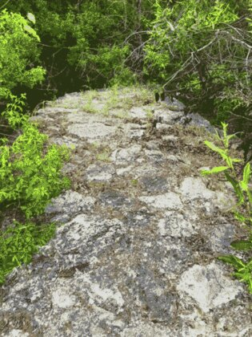
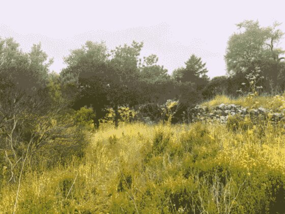
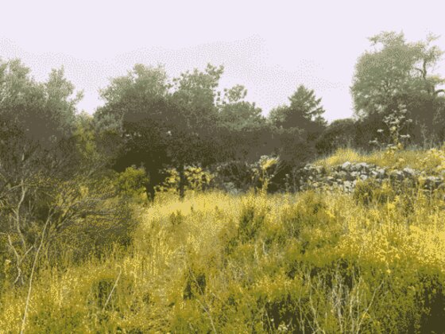
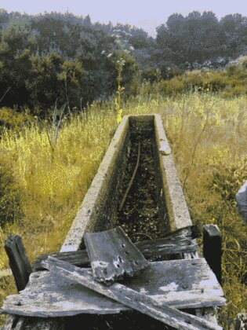
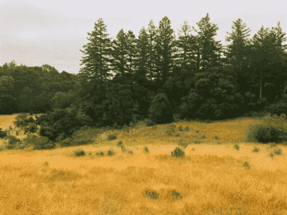
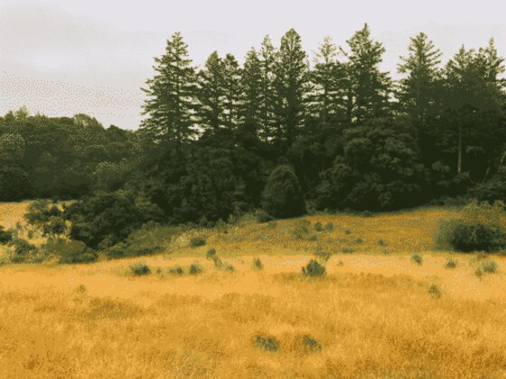
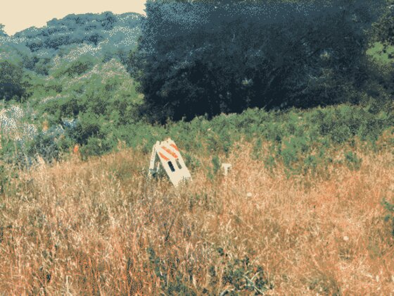
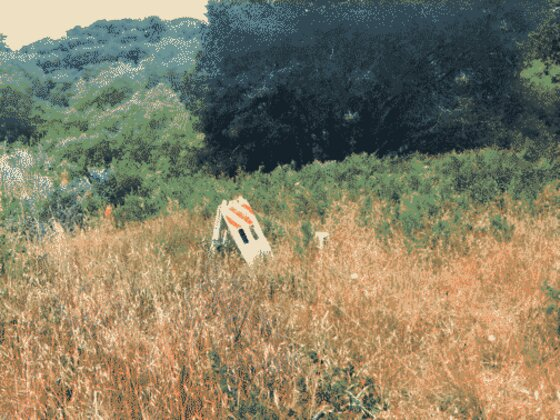

Santa Cruz Hike 260522
Boy this was a long hike! :D
I think it ended up being about 5 and a half hours of hiking, exploring, and more hiking. A friend invited me to check out a nice boulder that they thought I might like to climb, but we ended up getting very distracted by a curious stone brickwork structure in the woods nearby.
First of all, some little diagrams because otherwise some of the photos of the ruins won't really make sense :P

This shows the rough layout of the ruins from above, with an intact larger chamber with three small entry holes at ground level, then a large wall, then three smaller chambers with one entry each, another wall, and then a final large chamber with a crumbled wall.

The left wall in this diagram corresponds to the top of the first diagram, showing that one side of the ruin was built into a large hill, and the opposite side was freestanding.

I really should have taken more pictures inside the pit, because it's really difficult to get a good sense of scale from above! This pit, the intact one, had walls around 5 meters high, made of an outer layer of brick which was partially crumbled surrounding an inner construction of large stone blocks.
Again, scale is tricky, but this is the top of one of the seperating walls, made of larger stones fit together with mortar. It was around 1.5 meters wide.

This was a smaller stone wall on the southern side (to the right of the top-down diagram) of the ruins, which seemed to be a retaining wall for the south side of the hill?
There were also tons of bricks of various sizes and colors nearby (to the south of the ruins, just south of the retaining wall), and some even had writing on them!


The reason we originally went on this hike was partially to check out a large boulder with a tree growing on it, which was very cool looking (and potentially a fun climbing spot?)


We spent a couple hours looking at the hill ruins, but we eventually moved on and found some similar stone walls in a nearby field, as well as a sign which read "No hunting". We think the ruins in the field might have been used for cattle in some way, but we're not sure...
 


A reason we think these structures may have had to do with cattle was a trough nearby.
There was also another similar structure nearby, though it was a bit more overgrown.

We walked away from the structures and up a hill, where I took this series of photos. I started looking back the way we came, and panned right.
 


We kept walking along the trail, and though there were no other significant ruins, it was still a very pleasant hike :3

 



This was a super fun hike, and I'm really so curious about the ruins we found! My best (and really only) guess is that the big rooms were kilns? There were some bricks that looks like refractory bricks, and some had slag on them which fused them together which made it seem like something was being heated to very high temperatures, but they could have also just used a weird mortar that I don't know about. If you've got any ideas, please let me know!